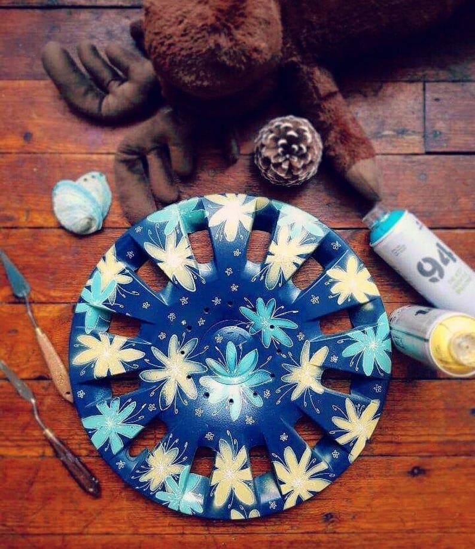

Le plastique

Le plastique est une matière lisse est peu poreuse il est donc préférable avant de peindre d'utiliser une sous couche de peinture via une bombe de peinture pour aider les prochaines couches à tenir sur le support.
La peinture conseillée pour le plastique est : la peinture acrylique